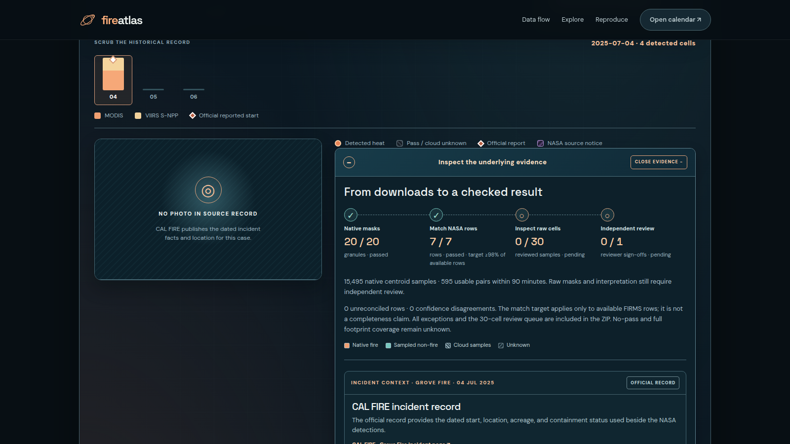
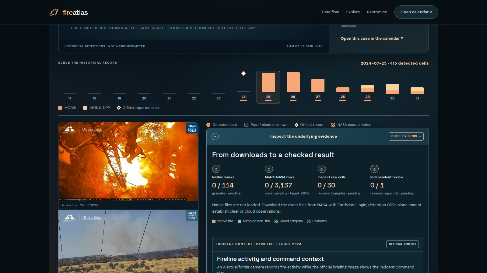

NASA SPACE APPS 2026 · PROJECT HANDOFF
Ignis-Atlassia
A harmonized MODIS and VIIRS active-fire research atlas
A complete context brief for a new brainstorming chat. It captures what we built, why we built it, which NASA data are real, how the interface works, what the evidence proves, what remains open, and where the next score-bearing work should go.
Challenge theme: NASA Space Apps 2026 · Harmonization of MODIS and VIIRS Hot Spots
Prepared from the repository state on 30 September 2026. This is an internal handoff and planning document, not a NASA endorsement or a final submission score.
01 · The idea
What the project is trying to make understandable
The problem
MODIS and VIIRS report thermal anomalies at different native resolutions, over different overpass patterns, and with different archive histories. A raw point count can look like a fire count even when the same activity is sampled by two sensors or when a source month is incomplete.
Judges and researchers need a view that says what was observed, what was harmonized, what is estimated, and what is unknown.
The answer
Ignis-Atlassia converts detections into distinct VIIRS-equivalent active-fire cell-days on a common 1 km EPSG:6933 equal-area grid, while preserving native sensor detail, raw FRP, source rows, versions, UTC dates, evidence state, and coverage state.
The result is a dated research atlas rather than a dramatic but unsupported fire map.
Non-negotiable scientific language
A hotspot is a satellite thermal observation. It is not a confirmed wildfire, fire perimeter, burned area, proof of crop-burning cause, proof that no fire occurred, or a full observation-coverage denominator.
The tool is a research and learning instrument. It is not an operational evacuation, fire-management, flight-planning, or spread-forecast system.
Who the experience is for
JudgeNeeds an immediate story, visible NASA provenance, and a reproducible path from map to evidence.
ResearcherNeeds common units, version matching, raw source rows, explicit gaps, and honest uncertainty.
Public learnerNeeds a visual atlas that explains why two satellites can disagree without hiding the reason.
03 · Real data and provenance
What is actually in the project
1,994,162unique standard FIRMS rows in the local database
456,202MODIS rows across Terra and Aqua
1,537,960Suomi NPP VIIRS rows
34sidecar-backed standard archive exports imported
2006earliest positive MODIS history displayed
2012earliest positive S-NPP history displayed
Two study regions
| Region | Bounding box | Use in the story | Data status |
|---|
| Northern California | −122.2, 38.8 to −120.0, 41.0 | Park Fire / Grove native-mask evidence; calibration and sensor bridge | 48 complete MODIS months and 47 complete S-NPP months from July 2022 through June 2026 |
| Punjab–Haryana | 73.8, 29.5 to 77.6, 32.6 | Seasonal monitoring context; October 2024 example with 5,174 observed cell-days | Same verified 2022–2026 window; reconstructed historical rows remain partial |
Provenance rules
- Eight exports retain original NASA request metadata. Twenty-six older exports have explicit reconstructed, row-only sidecars.
- Reconstructed rows are positive evidence only. They do not prove a complete month, clear satellite pass, cloud-free coverage, or a no-fire day.
- MODIS detections can be displayed from July 2006; S-NPP rows can be displayed from July 2012 and row-level data now extend through July 2022. The verified complete harmonized window starts later.
- Native MODIS fire-mask/geolocation products are separate evidence tracks, not silently mixed into the FIRMS calendar.
Repository boundary: the raw NASA_data archive and local SQLite database are intentionally ignored from GitHub. The publishable static bundle contains derived, checksummed, read-only evidence instead of credentials or a multi-gigabyte archive.
04 · The harmonization method
One comparable unit, with native detail kept visible
Processing chain
NASA FIRMS rows → UTC dates → centroids → EPSG:6933 cells → one cell/day → sensor bridge → calendar verdict
Every source row preserves the original sensor, product, collection/version, confidence, FRP, latitude/longitude, acquisition time, source URL and provenance hash.
The production calendar counts FIRMS type 0 or missing rows across confidence levels. Other types remain inspectable and are excluded from totals with visible counts.
Common analysis unit
VIIRS-equivalent active-fire cell-days on a shared 1 km equal-area grid. A detection centroid contributes at most once per cell per UTC day.
Native VIIRS 375 m detail and native MODIS approximately 1 km rows remain visible in the Sensor Bridge. Raw FRP stays sensor-specific in MW/day and is never added across sensors.
This is a sampling proxy. It does not prove full footprint overlap, deduplicate a physical event, or establish satellite pass/cloud denominators.
Calendar states that prevent false certainty
Observedreal source rows support the day/month
Estimatedtransparent bridge estimate is shown separately
Documented gapprocessing or source gap is named
Unknownno evidence is not converted to zero
Typical / highbaseline flags are descriptive, not alarm thresholds
FRP separateMW/day is context, not a cross-sensor sum
What the ratio does and does not mean
When version-matched overlap records pass eligibility gates, the app can fit and hold out a transparent count ratio for a region. That ratio is an exploratory harmonization aid, not a validated sensor-sensitivity model, fire-size estimate, or forecast. Prediction intervals are withheld because independent calibration is not yet supported.
06 · Validation and native evidence
What has been measured, checked, and deliberately left open

Grove native-mask audit frame: current ledger records 20/20 expected granules decoded, 15,495 clipped pixels, and 7/7 available FIRMS rows reconciled.

Park native-mask audit frame: current ledger records 114/114 granules decoded, 1,372,872 clipped pixels, and 3,137/3,137 FIRMS rows reconciled.
Calibration evidence
There are 41 eligible 2023–2026 MODIS 61.03 / VIIRS 2 month-pairs. Nested selected-pipeline median absolute log errors are 0.304 for Northern California and 0.322 for Punjab–Haryana. Median full-year absolute errors are 25.2% and 26.3%.
These are transparent held-out diagnostics, not proof of independent prediction coverage.
Still open
- Both native cases are processed-unreviewed.
- Human review of the deterministic 30-cell queue is not signed.
- Full footprint, pass, and cloud denominators are absent.
- Grove still has a missing companion in the complete expected set.
- Park/S-NPP evidence includes a documented processing gap on selected dates.
07 · Build, release, and architecture
What a clean clone can inspect without NASA credentials
Local architecture
Python / FastAPISQLite locallyvanilla JS/CSSLeaflet / globe shellGDAL native processing
- Owner-supplied NASA FIRMS archives are imported locally.
- Python services calculate calendars, research candidates, validation and calibration.
scripts/export_static.py writes a read-only site bundle.- Browser pages load derived JSON, compressed rows, evidence ZIPs, review templates and hashes directly.
The static copy does not ship the local database, raw NASA_data archive, credentials, or server-only imports.
Reproducibility surface
- 42 region-year calendars spanning 2006–2026.
- Manifest-listed checksummed files and source SHA-256 fingerprints.
- Compressed source-row samples, dated validity reports, analytical recounts, evidence ZIPs, and blank hash-bound review templates.
- Sensor Bridge/share-card data and an eight-day static globe snapshot.
- Local 30-second and approximately 90-second silent H.264 rehearsal videos with captions and manifests.
How a new chat can run it
uv sync then bash scripts/launch_demo.sh
For the read-only release: serve the site/ directory with a static HTTP server. For a fresh export, use uv run python scripts/export_static.py --db data/fireatlas.sqlite3 --output site-release.
Full tests are run locally with uv run python -m unittest discover -s tests. The static verification scripts cover calendar, method, data, globe, responsive layout, hashes and status consistency.
08 · Honest judging position
Why the score stopped moving
Current estimate
41.6 / 100 implementation
Current local rubric estimate: approximately 71 / 118. Earlier 44.8 / 100 and 93 / 118 claims were withdrawn; they counted presentation or incomplete evidence as if the scientific gates had passed.
Adding more rows and extending the display history improved completeness and honesty, but did not close the gates that carry the largest score weight.
Largest score-bearing weaknesses
- No verified public deployment or outside-user capture.
- No independent scientific review of native masks.
- No complete, request-verified 2012 sensor-step overlap.
- No full footprint/pass/cloud denominator for “no detection” interpretation.
- Many older rows lack original request metadata.
- MCD64A1 is credited and locally inventoried, but not yet a valid active-fire truth layer.
What is already strong
StoryGlobe → calendar → bridge → source row → evidence drawer.
HonestyObserved, estimated, gap, and unknown states are visible.
ScienceCommon 1 km cell-days, native detail, FRP separation, no invented zeros.
EvidenceHashes, manifests, ZIPs, recounts and review workflow exist.
ContextPunjab–Haryana seasonal example is dated and sourced.
PolishResponsive visual grammar, share card and rehearsal cut are ready locally.
The honest pitch is strong because it shows what the data can support and where it cannot. The next points come from closing independent/public gates, not adding decorative metrics.
09 · Brainstorming handoff
What the next chat should do
Immediate, implementable work
- Deploy the committed site/ bundle publicly and verify the exact project-subpath URL on desktop and phone.
- Deploy the read-only Python API only where it adds value; keep the static bundle as the no-credential fallback.
- Run an outside-user walkthrough and capture a public URL, timing, errors, and screenshots.
- Make the Research Lab NDVI layer, calendar, share card and data ledger the first-class demo path.
- Split any over-100 MB generated archive before pushing to GitHub; never commit the local database or raw NASA archive.
Work that needs outside evidence
- Qualified independent reviewer signs the Grove/Park native review forms.
- Complete native granule inventory and footprint/pass/cloud accounting.
- Original request metadata for reconstructed historical exports.
- Request-verified 2012 S-NPP overlap and a defensible sensor-step test.
- Valid use of MCD64A1 as lagged corroboration, with its temporal limitation shown.
Recommended deployment shape
GitHub remains source control. Vercel is a good host for the static site/ bundle. Render can host the FastAPI service if the API is needed. Keep the app read-only in production unless a persistent datastore is deliberately added. GitHub Pages is a useful static fallback, but the Vercel + Render split better matches the current architecture.
Prompt for the next brainstorming chat
“Use this PDF as the source of truth. Preserve the scientific caveats and current score. First audit the exact public release path, then choose one score-bearing gate to close. Do not add cosmetic metrics or claim a higher score without new evidence. Keep the globe, NDVI Research Lab, calendar verdict, Sensor Bridge, source evidence and review workflow coherent.”
Repository: github.com/AhnafZ778/NASA-Spaceapps · Local public-demo status at document time: not deployed from this checkout.